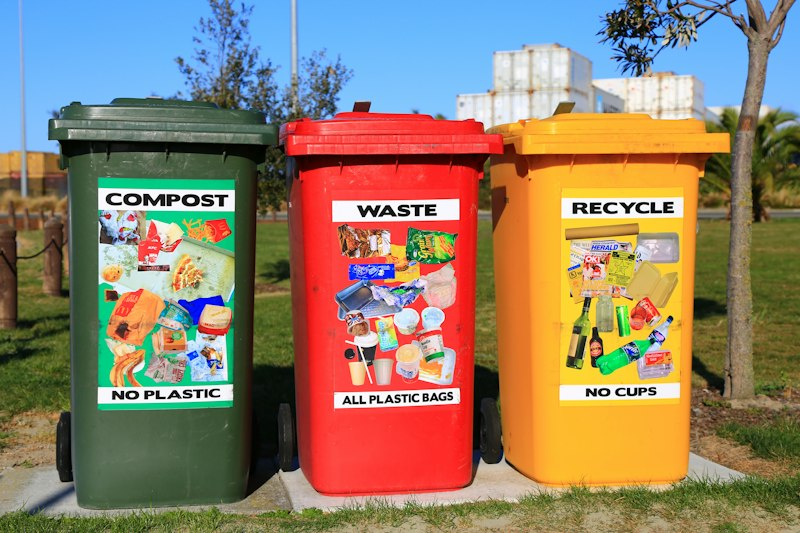
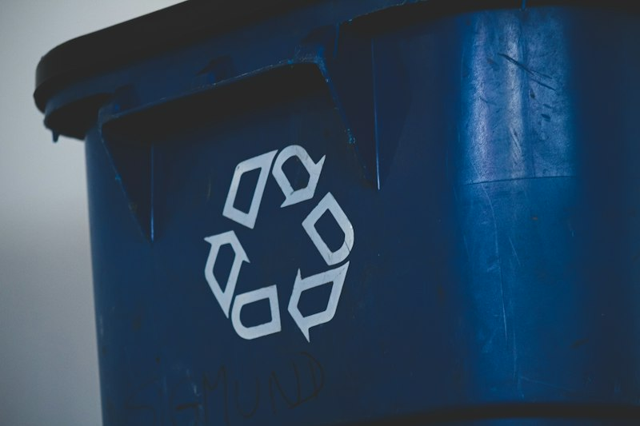
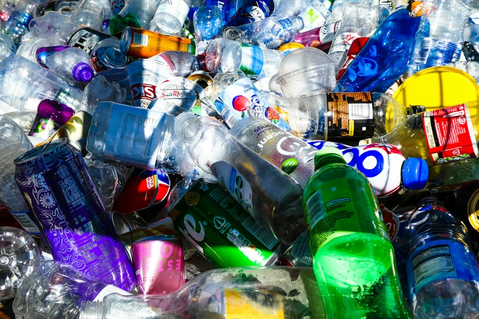

40–60 min antesResguardo Preventivo
Bolsas bajo techo antes del aguacero para que la corriente no las arrastre a los caños.

Acción VecinalDespeje de Rejillas
Cunetas libres de botellas y plásticos para permitir la entrada del agua sin desbordes.

10 Sectores10 Puntos Vigilados
Vigilancia comunitaria en caños tributarios del Río Atrato en el sector La Margarita.
Incentivos EcoPuntos
Reconocimiento comunitario avalado por la JAC para los vecinos vigías ambientales.
Prueba cómo avisa el sistema antes de llover
Presiona los botones para escuchar la alarma y ver el aviso que le llega a los vecinos de La Margarita antes del aguacero.
¿Cómo está el tiempo hoy?
Monitoreo minuto a minuto sobre la cuenca del Río Atrato y La Margarita.
Pronóstico satelital para las próximas 6 horas
Estimación de intensidad de precipitación sobre el sector La Margarita.
Caños y quebradas vigilados
Puntos donde evitamos taponamientos cuando llueve fuerte.
Quebrada La Cascarita
Paso peatonal del Sector La Margarita
Caño Yesca
Puente de la Calle 24
Canal Barrio Kennedy
Sector Bajo • Desagüe de aguas lluvias
Quebrada El Caraño
Salida al Río Atrato • Cerca al aeropuerto
Rejilla Carrera 1ra
Malecón de Quibdó
¿Viste una rejilla o caño tapado?
Envía tu reporte para que los vecinos o la cuadrilla de aseo puedan despejarlo antes de que empiece a llover.
Sector donde más se acumula basura
Se actualiza automáticamente según los reportes enviados por la comunidad de La Margarita.